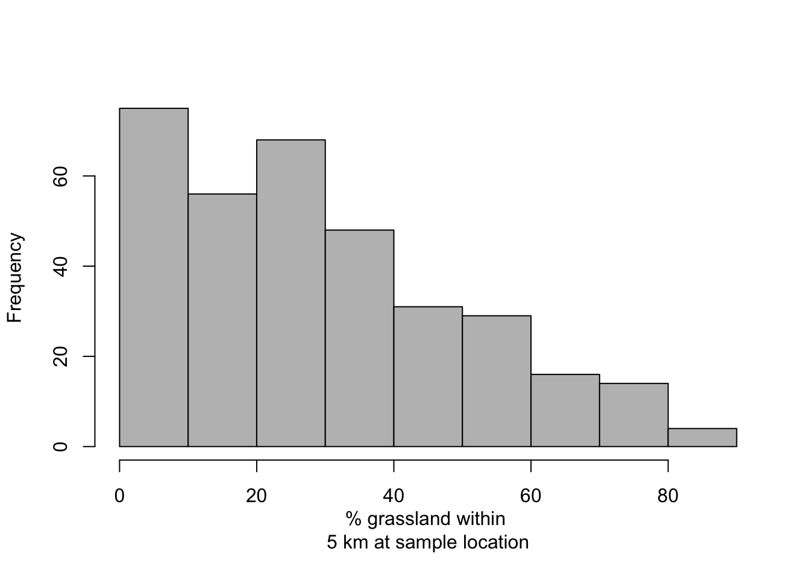

7 Grassland within 5 km of sampling
# Calculate percentage of land area that is grassland withing 5 km of sampled location
df1$grass.perc <- unlist(lapply(raster::extract(rl.nlcd.grass,pts.sample,buffer=5000),mean))*100
hist(df1$grass.perc,col="grey",main="",xlab="% grassland within \n5 km at sample location")